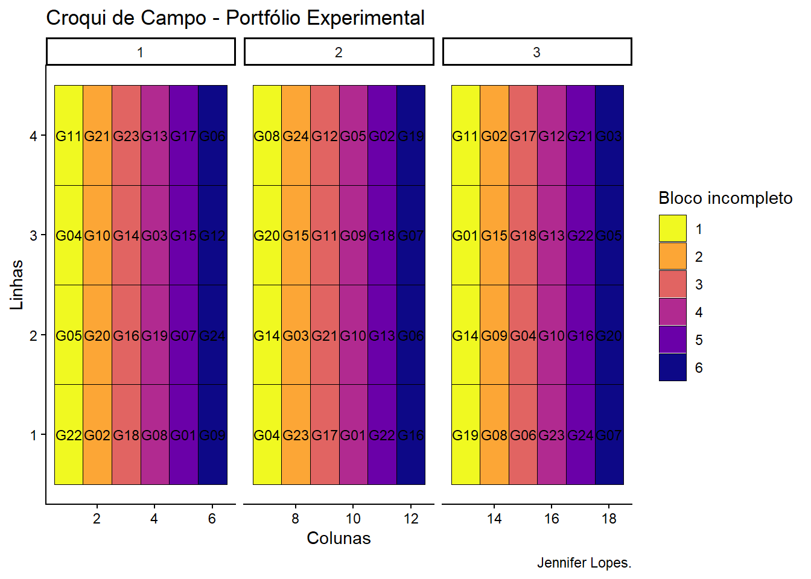
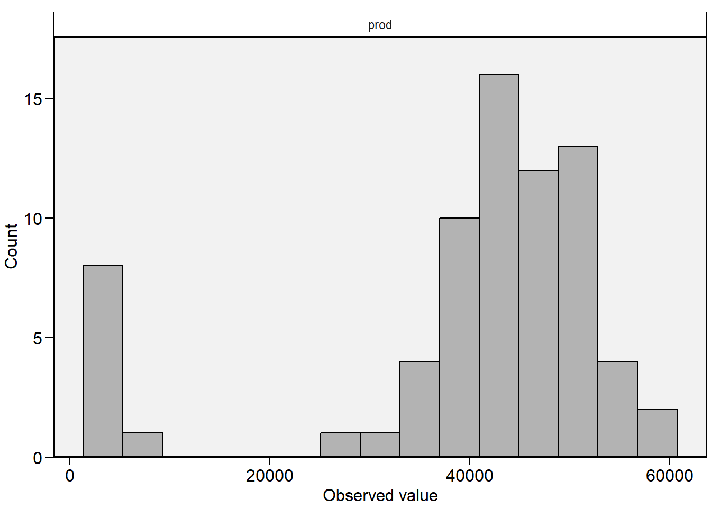
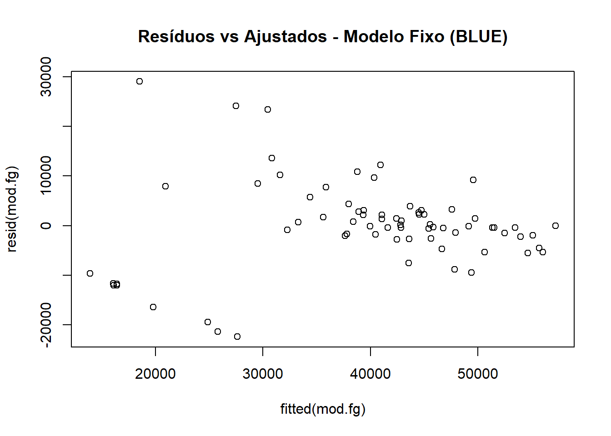
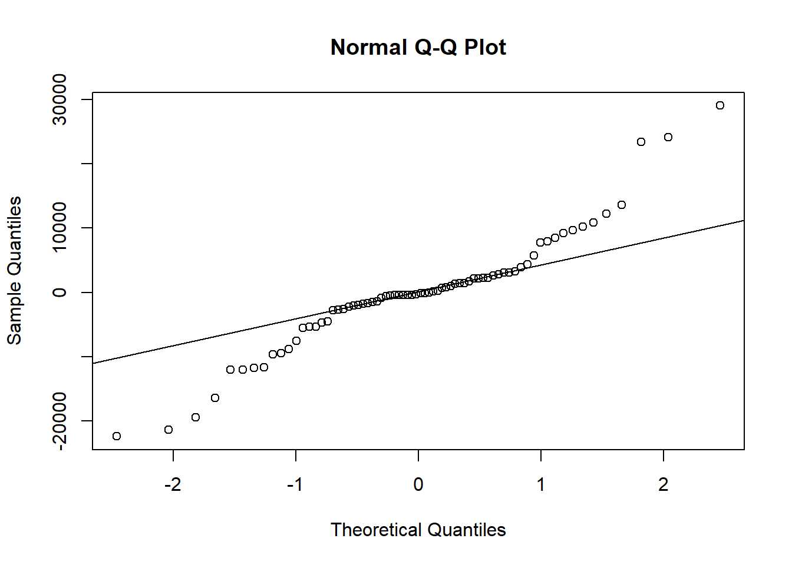
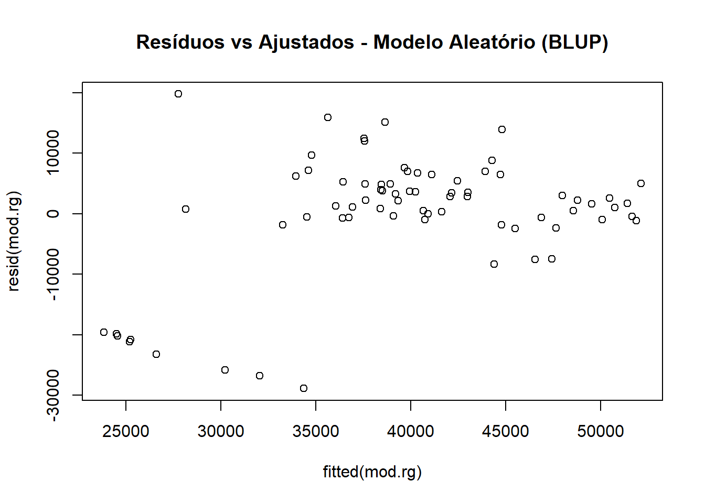
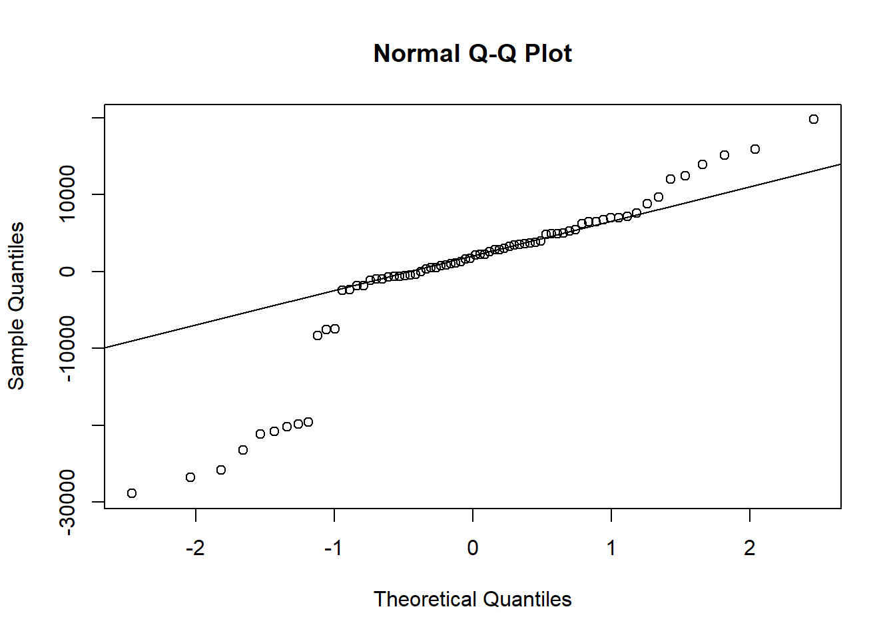
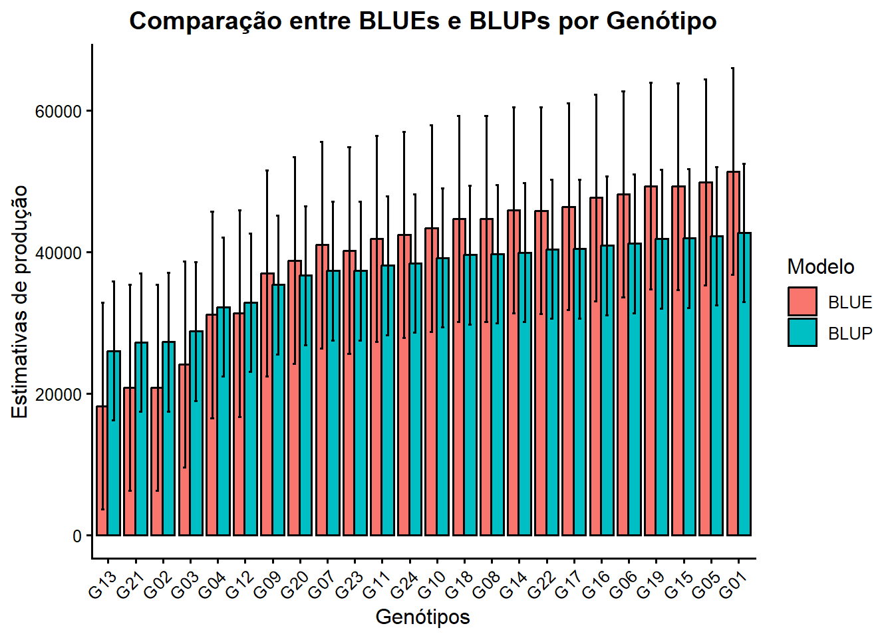
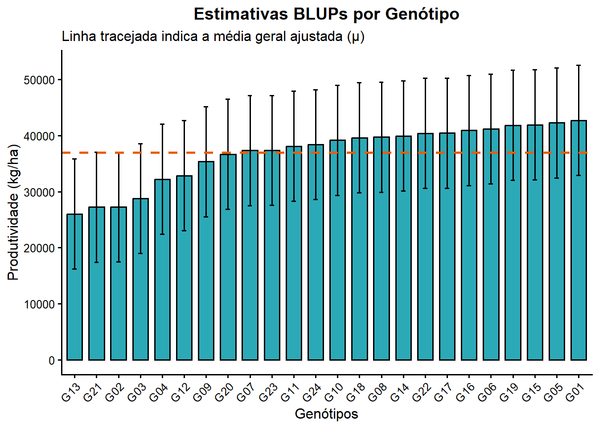
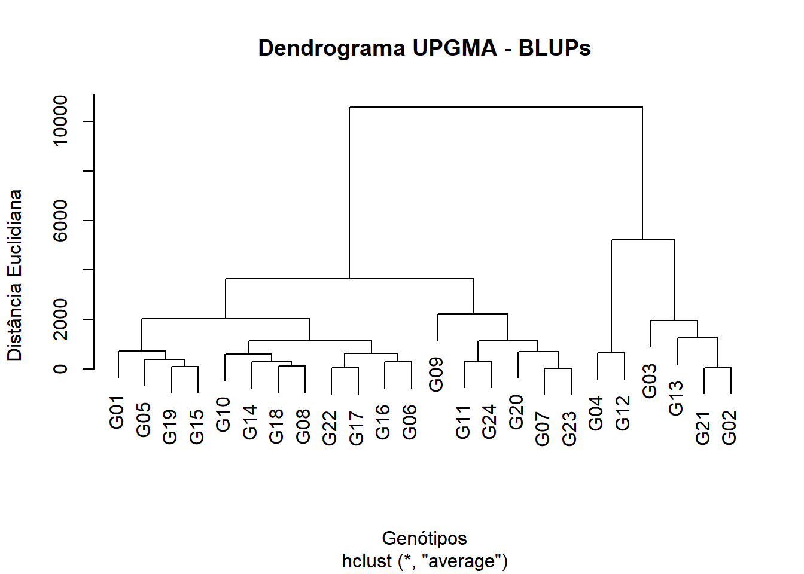

Este projeto utiliza dados experimentais simulados, desenvolvidos com o objetivo de reproduzir fielmente a complexidade de um ensaio real de melhoramento genético.
Foram aplicadas técnicas de estatística experimental, modelagem mista (BLUP/REML) e análises multivariadas para identificar genótipos superiores com base em critérios de desempenho.
A simulação permitiu validar todo o fluxo de análise, do delineamento ao ranqueamento final, consolidando um cenário realista de tomada de decisão em programas de melhoramento.
1 Instalação e carregamento dos pacotes
Code
if (!requireNamespace("pacman", quietly =TRUE)) install.packages("pacman")pacman::p_load( broom, # Organiza resultados de modelos em formato tidy broom.mixed, # Versão do broom para modelos mistos desplot, # Visualiza delineamentos experimentais emmeans, # Médias ajustadas e comparações múltiplas ggpubr, # Gráficos estatísticos prontos com ggplot2 lme4, # Modelos lineares mistos lmerTest, # P-valores para modelos lmer() multcomp, # Testes múltiplos (Tukey, Dunnett) multcompView, # Letras de agrupamento (a, b, c) plotly, # Gráficos interativos tidyverse, # Conjunto para manipulação e visualização de dados writexl, # Exporta dados para Excel metan, # Análises agronômicas e genéticas (BLUP, MGIDI) httr2, # Consumo de APIs modernas readr, # Leitura rápida de CSV e textos readxl, # Importação de planilhas Excel base64enc, # Codificação Base64 (arquivos e APIs) viridis, DT, tidyr)
2 Como gerar um token de acesso pessoal no GitHub
O Personal Access Token (PAT) é uma credencial que substitui sua senha ao usar a API, CLI ou comandos Git via HTTPS. Ele garante autenticação segura e controle sobre o que pode ser acessado.
Etapas para gerar o token:
Acesse sua conta GitHub. Entre em github.com com seu usuário e senha.
Abra as configurações do desenvolvedor. No canto superior direito, clique na sua foto de perfil - Settings - Developer Settings - Personal access tokens.
Crie um novo token. Clique em Generate new token (ou Create new token (fine-grained), se disponível).
Defina as informações básicas.
Dê um nome descritivo ao token (ex: token_api_portfolio);
Escolha uma data de expiração adequada (por exemplo, 90 dias);
Selecione apenas os escopos (permissões) necessários - por exemplo, marque repo para acesso a repositórios.
Gere o token. Clique em Generate token para criar. Importante: copie o valor imediatamente ele não será mostrado novamente.
Armazene o token com segurança. Guarde em local seguro, por exemplo, em um gerenciador de senhas ou em variáveis de ambiente como Sys.setenv(GITHUB_TOKEN="...").
Use o token em suas integrações. Esse token pode ser usado para:
Autenticação em APIs, ex: httr2::req_auth_bearer_token();
Operações Git via HTTPS (push/pull);
Execuções automatizadas em pipelines e scripts.
3 Função coleta_dados_github()
Criei a função coleta_dados_github() para automatizar a leitura de arquivos diretamente de um repositório GitHub, sem necessidade de download manual. Ela utiliza o pacote httr21 para realizar a requisição HTTP à API do GitHub2, montando a URL de acesso a partir do nome do repositório, caminho do arquivo e branch especificados.
Importante
Você precisa acessar o GitHub e gerar um Token de Acesso Pessoal (PAT -Personal Access Token).
Caso o repositório exija autenticação, o token pessoal do GitHub é aplicado automaticamente via req_auth_bearer_token().
Após a conexão, a função valida o status da resposta e decodifica o conteúdo retornado, que vem em formato Base64 padrão usado pela API para transmitir arquivos binários.
O arquivo é temporariamente salvo e, em seguida, lido conforme sua extensão: arquivos .csv são importados com readr::read_csv() e planilhas .xlsx com readxl::read_excel().
Ao final, a função retorna um data frame limpo e pronto para análise, exibindo mensagens informativas sobre o número de linhas e colunas carregadas. Essa estrutura modular permite integração direta entre o GitHub e o pipeline experimental.
Code
coleta_dados_github <-function(repo, path, branch ="main", token =Sys.getenv("GITHUB_TOKEN")) {library(httr2)library(readr)library(readxl)library(base64enc)library(glue)# Mensagem de debugmessage(glue("Conectando ao repositório {repo}, arquivo: {path}"))# Monta a URL da API url <-paste0("https://api.github.com/repos/", repo, "/contents/", path, "?ref=", branch)# Requisição req <-request(url)if (nzchar(token)) { req <-req_auth_bearer_token(req, token) }# Executa a requisição resp <-req_perform(req)# Se falhar, mostra statusif (resp_status(resp) >=300) {stop(glue("Falha ao acessar GitHub: HTTP {resp_status(resp)}. Verifique o token, repo e caminho.")) } obj <-resp_body_json(resp)if (is.null(obj$content)) {stop("Conteúdo vazio verifique se o caminho aponta para um arquivo, não para uma pasta.") }# Decodifica o arquivo em base64 raw <-base64decode(obj$content) ext <- tools::file_ext(path) tmp <-tempfile(fileext =paste0(".", ext))writeBin(raw, tmp)# Lê conforme o tipoif (ext =="csv") { dados <-read_csv(tmp, show_col_types =FALSE) } elseif (ext %in%c("xlsx", "xls")) { dados <-read_excel(tmp) } else {stop("Formato não suportado: use .csv, .xlsx ou .xls") }message(glue("Dados carregados com sucesso ({nrow(dados)} linhas, {ncol(dados)} colunas)."))return(dados)}
4 Importação dos dados via API do GitHub
4.1 Para repositórios públicos
Nesta etapa, foi realizada a importação automatizada dos dados diretamente do GitHub, garantindo reprodutibilidade e versionamento do experimento. A função coleta_dados_github() foi desenvolvida previamente e armazenada no diretório funcoes/, sendo responsável por estabelecer a conexão com o repositório público, localizar o arquivo especificado e fazer o download temporário antes de ler o conteúdo com o pacote readxl.
Essa abordagem elimina a necessidade de armazenar arquivos localmente e permite atualizar os dados sempre que o repositório for modificado. Em seguida, a função glimpse() é utilizada para inspecionar rapidamente a estrutura do dataset, verificando nomes, tipos e exemplos das variáveis que serão analisadas nos próximos blocos.
Code
# Carrega a função de coleta de dados (salva em funcoes/coleta_dados_github.R)source("meu_projeto/funcoes/coleta_dados_github.R")
Code
# Coleta dos dados direto do repositório públicodados <-coleta_dados_github(repo ="JenniferLopes/portfolio_experimentacao_agricola",path ="meu_projeto/dados/alpha_lattice.xlsx")
O delineamento Alpha-Lattice3 é uma variação do látice incompleto balanceado desenvolvido para experimentos com grande número de tratamentos (genótipos) e número limitado de repetições.
Ele organiza os tratamentos em blocos incompletos de tamanho fixo, distribuídos aleatoriamente dentro de cada repetição, de forma que cada par de tratamentos ocorra juntos em um número balanceado (ou quase balanceado) de blocos.
Essa estrutura reduz a variabilidade dentro dos blocos e aumenta a precisão experimental, especialmente quando há heterogeneidade no campo.
O modelo estatístico para o delineamento Alpha-Lattice inclui efeitos de tratamentos (genótipos), repetições e blocos dentro das repetições, permitindo ajustar as diferenças ambientais por meio de modelos lineares mistos (REML/BLUP).
Por isso, ele é amplamente utilizado em programas de melhoramento genético de plantas, onde se avaliam dezenas ou centenas de linhagens experimentais. Além de aumentar a eficiência da comparação entre genótipos, o delineamento Alpha-Lattice viabiliza o uso de componentes de variância e herdabilidade, fornecendo base sólida para a seleção genotípica mais precisa.
6 Sobre os dados experimentais - Simulados
Os dados analisados neste experimento correspondem a um ensaio de avaliação de genótipos conduzido sob delineamento em blocos incompletos do tipo Alpha-Lattice, com o objetivo de estimar parâmetros genéticos e identificar materiais superiores em termos de produtividade.
O conjunto de dados contém informações de:
produção por parcela (prod);
genótipos avaliados (gen);
repetições (rep);
blocos incompletos (inc.bloco);
Além das coordenadas de campo utilizadas para a construção do croqui experimental, col (clouna) e row (linha);
Cada repetição foi subdividida em blocos menores, chamados de subblocos para reduzir o efeito da variabilidade ambiental e aumentar a precisão das comparações entre genótipos.
7 Ajuste das variáveis
Neste passo, realizei o ajuste das variáveis categóricas do conjunto de dados para garantir que o modelo estatístico reconheça corretamente os fatores experimentais.
As colunas correspondentes a genótipos (gen), repetições (rep) e blocos incompletos (inc.bloco) são convertidas para o tipo factor, utilizando a função mutate() do dplyr.
Essa conversão é essencial em análises de experimentação agrícola, pois esses efeitos representam níveis de tratamento e estruturas hierárquicas que devem ser tratadas como variáveis qualitativas, e não numéricas.
Code
dados <- dados %>%mutate(gen =as.factor(gen),rep =as.factor(rep),inc.bloco =as.factor(inc.bloco))
8 Sobre o experimento
Foram avaliados, 24 genótipos, em 3 repetições, com 6 blocos incompletos.
Code
resumo <- dados %>%summarise(n_genotipos =n_distinct(gen),n_repeticoes =n_distinct(rep),n_blocos_inc =n_distinct(inc.bloco))print(resumo)
O croqui do experimento, foi representado graficamente no delineamento alpha-lattice. Para isso, utilizei o pacote ggplot2, mapeando as coordenadas de campo onde cada célula geom_tile() representa uma unidade experimental e é identificada pelo respectivo genótipo (label = gen).
A coloração das parcelas foi definida pela variável inc.bloco, permitindo destacar visualmente os blocos incompletos. Em seguida, apliquei facet_wrap(~ rep) para separar as repetições em painéis distintos, o que facilita a inspeção da uniformidade entre blocos dentro de cada repetição.
Code
dados <- dados %>%mutate(inc.bloco =as.factor(inc.bloco))croqui <- dados %>%ggplot(aes(x = col, y = row, fill = inc.bloco)) +geom_tile(color ="black") +geom_text(aes(label = gen), size =3) +scale_fill_viridis_d(option ="C", direction =-1) +theme_classic() +facet_wrap(~ rep, scales ="free_x") +labs(title ="Croqui de Campo - Portfólio Experimental",x ="Colunas",y ="Linhas",fill ="Bloco incompleto", caption ="Jennifer Lopes.")print(croqui)

10 Análise descritiva
Foi realizada à análise descritiva da variável produtividade (prod), utilizando a função desc_stat() do pacote metan4.
Essa função permite gerar estatísticas resumo como média, mediana, desvio-padrão, coeficiente de variação e amplitude e, quando hist = TRUE, apresenta o histograma da distribuição dos dados.
O argumento stats = "main" foi utilizado para focar nos indicadores principais, garantindo uma leitura rápida e objetiva das medidas de tendência central e dispersão.
Code
#|warning: falsedescritiva <- dados %>% metan::desc_stat(prod, hist =TRUE, stats ="main")

O histograma gerado pela função desc_stat() representa a distribuição dos valores observados de produtividade (prod) entre os genótipos avaliados.
Observa-se uma concentração predominante de parcelas com produtividade entre 35.000 e 50.000 kg/ha, indicando que a maior parte dos genótipos apresenta desempenho médio a alto.
Há também um pequeno grupo com valores muito baixos, próximos de zero, que provavelmente correspondem a falhas de campo ou perdas experimentais.
Essa dispersão assimétrica sugere a presença de heterogeneidade entre genótipos e blocos, reforçando a necessidade do uso de modelos mistos (REML/BLUP) nas etapas seguintes, para separar o componente genético do ambiental e obter estimativas mais precisas dos efeitos.
Code
DT::datatable(descritiva)
A tabela de estatísticas descritivas resume o comportamento da variável de produtividade (prod) no experimento. Ao interpretar os resultados, é possível observar que a média foi de aproximadamente 39.772 kg/ha, enquanto a mediana foi de 43.138 kg/ha, indicando uma leve assimetria negativa ou seja, há algumas parcelas com produtividade mais baixa que puxam a média para baixo.
O valor máximo (58.757 kg/ha) representa o melhor desempenho entre os genótipos avaliados, e o mínimo (3.342 kg/ha) confirma a presença de valores muito baixos observados no histograma, possivelmente relacionados a falhas de campo.
O desvio-padrão (14.605) e o coeficiente de variação (36,7%) refletem alta variabilidade experimental, o que é esperado em populações ainda segregantes.
Já o erro padrão da média (1.721) e o intervalo de confiança (±3.432) indicam boa precisão das estimativas, considerando o número de observações válidas (n = 72).
11 Modelagem estatística
Nesta etapa, ajustei dois modelos lineares mistos para avaliar a produtividade dos genótipos no delineamento alpha-lattice, explorando duas abordagens distintas:
Efeito fixo e efeito aleatório. Essa comparação é essencial para compreender o comportamento da variável de interesse sob diferentes pressupostos de inferência e para decidir qual estratégia oferece estimativas mais adequadas ao objetivo experimental.
11.0.1 Modelo 1 - Genótipo como efeito fixo (BLUEs)
Essa abordagem gera as Estimativas Lineares Não Viesadas (BLUEs), que representam as médias ajustadas dos genótipos após o controle dos efeitos de repetição e blocos incompletos. Esse tipo de modelagem é apropriado quando o interesse está em comparar diretamente os genótipos avaliados no experimento, sem extrapolar conclusões para um conjunto maior de materiais genéticos. Utilizei a função anova() com o método Kenward–Roger5 para obter o teste de significância dos efeitos fixos. Além disso, avaliei os resíduos e a sua normalidade, a fim de verificar o atendimento aos pressupostos do modelo.
Code
mod.fg <-lmer(prod ~ gen + rep + (1| rep:inc.bloco), data = dados)
O modelo matemático foi especificado da seguinte forma:
\(yijk=μ+gi+rj+bk(j)+εijk\)
Componentes
Descrição
\(y_{ijk}\)
Observação do rendimento do genótipo (i) na repetição (j) e bloco incompleto (k)
\(u\)
Média geral do experimento
\(g_i\)
Efeito fixo do genótipo \(i = 1, 2, \ldots, G\)
\(r_j\)
Efeito fixo da repetição \(j = 1, 2, \ldots,R\)
\(b_{k(j)}\)
Efeito aleatório do bloco incompleto (k) dentro da repetição (j), assumindo \(b_{k(j)} \sim N(0, \sigma_b^2)\)
\(\varepsilon_{ijk}\)
Erro aleatório, assumindo \(\varepsilon_{ijk} \sim N(0, \sigma_e^2)\) e independentes entre si
11.0.2 Diagnóstico de resíduos
O gráfico Resíduos x Ajustados do modelo fixo (BLUE) mostra a dispersão dos resíduos em relação aos valores ajustados pelo modelo.
Ao analisar o gráfico, foi possível observar uma distribuição aleatória dos pontos ao redor da linha zero, sem tendência clara, o que indica que o modelo não apresenta viés sistemático na predição da produtividade.
No entanto, é possível verificar também, uma maior variabilidade dos resíduos em níveis intermediários e altos de produtividade, sugerindo heterocedasticidade leve, isto é, variação desigual do erro entre os níveis de resposta.
Apesar disso, os resíduos permanecem majoritariamente centrados em torno de zero, o que é desejável em um modelo bem ajustado.
Em experimentos agrícolas, pequenas variações são esperadas devido a fatores ambientais e do campo experimental, mas o padrão geral indica que o modelo fixo se ajusta adequadamente aos dados observados.
Code
plot(resid(mod.fg) ~fitted(mod.fg),main ="Resíduos vs Ajustados - Modelo Fixo (BLUE)")

No gráfico Q-Q Plot do modelo fixo, foi avaliada a normalidade dos resíduos, comparando os quantis observados (eixo y) com os quantis teóricos da distribuição normal (eixo x).
Visualmente, observei que a maioria dos pontos segue próxima da linha diagonal, indicando que os resíduos apresentam comportamento aproximadamente normal.
Apenas pequenas deformações nas extremidades (caudas) sugerem uma leve assimetria, o que é comum em dados de produtividade agrícola, especialmente em populações ainda segregantes.
Essa análise é importante porque a suposição de normalidade dos erros garante a validade dos testes F e das estimativas de variância no modelo.
Apesar das pequenas discrepâncias nas caudas, o ajuste é considerado adequado para fins de inferência, não comprometendo a interpretação dos efeitos fixos e a obtenção das médias ajustadas (BLUEs).
Code
qqnorm(resid(mod.fg)); qqline(resid(mod.fg))

11.0.3 ANOVA para efeitos fixos
Em seguida, foi realizada à análise de variância (ANOVA) para o modelo com genótipos tratados como efeitos fixos, utilizando o método Kenward-Roger para o cálculo dos graus de liberdade (ddf = Kenward-Roger).
Essa abordagem é mais apropriada em experimentos com número limitado de repetições e estruturas desbalanceadas, pois ajusta a variância dos erros e fornece testes F mais precisos.
O objetivo aqui, foi avaliar a significância dos efeitos de genótipo, repetição e blocos incompletos sobre a produtividade.
Quando o efeito de genótipo é significativo, isso indica que existe variabilidade real entre os materiais avaliados, justificando o prosseguimento da análise com comparações múltiplas e estimativas médias ajustadas (BLUEs).
Além disso, essa etapa permite confirmar se a estrutura do delineamento (blocos incompletos dentro de repetições) foi eficiente em controlar a heterogeneidade experimental, garantindo que as diferenças observadas entre genótipos sejam atribuídas majoritariamente a causas genéticas e não ao ruído ambiental.
Type III Analysis of Variance Table with Kenward-Roger's method
Sum Sq Mean Sq NumDF DenDF F value Pr(>F)
gen 5951733732 258771032 23 38.024 1.9325 0.03499 *
rep 1007639474 503819737 2 8.142 3.7693 0.06938 .
---
Signif. codes: 0 '***' 0.001 '**' 0.01 '*' 0.05 '.' 0.1 ' ' 1
A tabela da ANOVA com o método de Kenward-Roger apresenta os testes de significância para os efeitos fixos incluídos no modelo.
Ao interpretar os resultados, foi possível observar que o efeito de genótipo foi significativo (F=1,93; p=0,03598), indicando que existe variabilidade estatisticamente detectável entre os genótipos avaliados quanto à produtividade.
Esse resultado confirma que as diferenças observadas não se devem apenas ao acaso, mas refletem diferenças genéticas reais entre os materiais testados.
Por outro lado, o efeito de repetição (F=0,02; p=0,88126) não foi significativo, o que sugere que as condições experimentais entre as repetições foram homogêneas, sem variações no ambiente.
A significância do fator genótipo valida o uso do modelo misto na sequência da análise, permitindo estimar as médias ajustadas (BLUEs) e, posteriormente, comparar o desempenho dos materiais.
Importante
A ANOVA Tipo III foi utilizada porque o modelo ajustado não é completamente ortogonal ou seja, os efeitos dos fatores (genótipos, repetições e blocos) não são totalmente independentes. Nesse tipo de modelo, cada termo deve ser avaliado ajustando-se para os demais fatores presentes.
11.1 Modelo 2: Genótipo como efeito aleatório - BLUPs
Neste segundo modelo, considerei o genótipo como efeito aleatório, o que transforma a natureza da inferência do modelo.
Essa modelagem tem como objetivo predizer o valor genético dos genótipos ou seja, estimar seus BLUPs (Best Linear Unbiased Predictors).
Enquanto o modelo fixo fornece médias ajustadas (BLUEs) apenas para os genótipos testados, este modelo permite inferir sobre uma população maior, tratando os genótipos como uma amostra aleatória dentro do programa de melhoramento.
Essa abordagem é mais realista no contexto do melhoramento genético vegetal, pois considera a variabilidade genética como um componente da variância total e reduz o impacto de observações extremas.
Além disso, ao estimar simultaneamente as variâncias genética \(σg2\), de bloco \(σb2\) e residual \(σr2\), o modelo fornece base para calcular parâmetros genéticos, como herdabilidade e acurácia seletiva fundamentais para a etapa de seleção de linhagens promissoras.
O modelo matemático foi especificado da seguinte forma:
\(yijk=μ+rj+gi+bk(j)+εijk\)
Símbolo
Descrição
Tipo de efeito
Distribuição assumida
\(y_{ijk}\)
Valor observado do rendimento do genótipo (i) na repetição (j) e bloco (k)
-
-
\(u\)
Média geral do experimento
Fixo
-
\(r_j\)
Efeito da repetição (j)
Fixo
-
\(g_i\)
Efeito do genótipo (i)
Aleatório
\(g_i \sim N(0, \sigma^2_g)\)
\(b_{k(j)}\)
Efeito do bloco incompleto (k) dentro da repetição (j)
Aleatório
\(b_{k(j)} \sim N(0, \sigma^2_b)\)
\(\varepsilon_{ijk}\)
Erro aleatório associado à observação
Aleatório
\(\varepsilon_{ijk} \sim N(0, \sigma^2_e)\)
11.1.1 Diagnóstico dos resíduos
Ao analisar o gráfico Resíduos x Ajustados do modelo aleatório (BLUP), foi possível verificar o comportamento dos erros em relação aos valores preditos.
Os pontos se distribuem de forma predominantemente aleatória ao redor da linha zero, sem formação de padrões evidentes, o que indica que o modelo apresenta homocedasticidade, ou seja, variância constante dos resíduos ao longo da faixa de produtividades ajustadas.
Entretanto, alguns pontos mais dispersos na extremidade inferior referentes a parcelas com produtividade muito baixa o que é comum em ensaios de campo, onde variações ambientais e falhas experimentais podem gerar resíduos extremos.
Mesmo assim, a tendência geral mostra que o modelo aleatório ajustou bem a estrutura dos dados, capturando os efeitos genéticos e de bloco de forma eficiente.
Code
plot(resid(mod.rg) ~fitted(mod.rg), main ="Resíduos vs Ajustados - Modelo Aleatório (BLUP)")

No gráfico Q-Q Plot do modelo aleatório (BLUP), foi avaliado se os resíduos seguem a distribuição normal teórica, um dos pressupostos fundamentais do modelo misto.
A maioria dos pontos se alinha bem à linha diagonal, o que indica que a distribuição dos resíduos é aproximadamente normal. Apenas pequenas deformações nas extremidades (caudas) podem ser observadas, refletindo a presença de alguns valores atípicos comportamento comum em experimentos agrícolas devido à variabilidade natural entre parcelas.
Essa proximidade entre os quantis observados e teóricos confirma que o ajuste do modelo é adequado e que as inferências obtidas (como os componentes de variância e os BLUPs) são estatisticamente válidas.
O modelo aleatório apresentou boa aderência à normalidade e homogeneidade de variâncias, reforçando sua consistência para estimar parâmetros genéticos e predizer o desempenho dos genótipos.
Code
qqnorm(resid(mod.rg)); qqline(resid(mod.rg))

Pessoal, vou reforçar uma questão que pode surgir:
Important
A suposição de normalidade dos resíduos é verificada para avaliar o ajuste e a robustez do modelo, mas não é um pressuposto estritamente necessário para a validade das estimativas obtidas via REML/BLUP. O modelo misto suporta pequenas violações de normalidade, desde que a estrutura de variâncias e covariâncias seja corretamente especificada e os resíduos sejam independentes e homocedásticos.
11.1.2 Teste de significância dos componentes de variância
Nesta etapa, foi realizado o teste de significância dos componentes de variância por meio da função ranova()6, que avalia se os efeitos aleatórios incluídos no modelo contribuem de forma significativa para explicar a variabilidade observada na produtividade.
O procedimento compara o modelo completo com versões reduzidas (sem cada efeito aleatório), utilizando testes de razão de verossimilhança (Likelihood Ratio Test)7.
Quando o resultado indica que o componente de variância associado ao genótipo é significativo, isso confirma que existe variabilidade genética expressiva na população avaliada, o que justifica a aplicação do modelo misto e a obtenção dos BLUPs para seleção dos melhores materiais.
Da mesma forma, a significância do componente de bloco dentro de repetição indica que o delineamento alpha-lattice foi eficiente em captar variações ambientais locais, contribuindo para a redução do erro residual e o aumento da precisão experimental.
A ranova() permite validar estatisticamente a estrutura hierárquica do modelo e assegurar que cada efeito aleatório considerado genótipos, blocos e erro, desempenha papel relevante na explicação da variância total, garantindo um modelo parcimonioso e biologicamente coerente com o delineamento do experimento.
A análise de variância dos componentes aleatórios, obtida por meio da função ranova(), permite avaliar a contribuição de cada termo aleatório do modelo para o ajuste global, com base no teste da razão de verossimilhança (LRT).
No modelo ajustado
\(prod∼rep+(1∣gen)+(1∣rep:inc.bloco)\)
Observou-se que o efeito aleatório de genótipos foi significativo (p = 0.0388), indicando que há variação genética entre os genótipos avaliados, justificando sua manutenção no modelo.
Por outro lado, o termo blocos incompletos dentro de repetição (rep:inc.bloco) não apresentou significância estatística (p = 0.5074), sugerindo que essa fonte de variação não contribui de forma relevante para explicar o rendimento.
Nesse caso, a simplificação do modelo, removendo esse termo, resulta em uma estrutura mais parcimoniosa, com melhor ajuste (AIC = 1529.4) e menor complexidade, sem perda de qualidade na predição.
11.1.3 Comparação entre modelos (AIC e LogLik)
Por fim, comparei o desempenho dos dois modelos o de efeito fixo (BLUE) e o de efeito aleatório (BLUP) utilizando os critérios AIC (Akaike Information Criterion)8 e logLik (logaritmo da verossimilhança).
Esses indicadores permitem avaliar a qualidade de ajuste e a parcimônia dos modelos, isto é, o equilíbrio entre complexidade e capacidade explicativa.
O AIC é uma medida em que valores menores indicam melhor ajuste, enquanto o logLik reflete a verossimilhança do modelo quanto maior, melhor a adequação aos dados observados.
A comparação entre os modelos de efeitos fixos (BLUE) e aleatórios (BLUP) foi realizada com base nos critérios Akaike Information Criterion (AIC) e Log-Likelihood (logLik), que medem a qualidade do ajuste do modelo aos dados.
O modelo com efeitos fixos apresentou um AIC de 1106.276 e logLik = -526.1379, enquanto o modelo com efeitos aleatórios resultou em AIC de 1554.834 e logLik = -772.4170.
Como valores menores de AIC indicam melhor ajuste e maior parcimônia, conclui-se que o modelo com genótipos tratados como efeitos fixos fornece um ajuste mais adequado para os dados avaliados neste experimento. Isso sugere que a variação entre genótipos foi suficientemente explicada como efeito fixo, sem necessidade de tratá-los como uma amostra aleatória de uma população maior.
Por outro lado, o modelo com genótipos como efeitos aleatórios (BLUP), embora essencial em contextos de predição genética e seleção em larga escala, apresentou maior penalização no AIC, refletindo maior complexidade sem ganho proporcional de ajuste para este conjunto de dados específico.
12 Estimativas dos BLUEs E BLUPs
12.1 Estimativas dos BLUEs - Efeito fixo
Nesta etapa, obtive as estimativas BLUEs (Best Linear Unbiased Estimates), correspondentes às médias ajustadas dos genótipos considerando o modelo com efeitos fixos.
Utilizei a função emmeans() do pacote emmeans9, que calcula as médias marginais ajustadas após o controle dos efeitos de repetição e blocos incompletos.
Dica
Foi lançada uma nova versão do pacote 29/10/2025. Confira aqui, as novas funções!
Em seguida, converti o resultado para data frame e selecionei as colunas principais:
gen: identificação dos genótipos;
BLUE: média ajustada estimada;
IC_inferior e IC_superior: limites inferior e superior do intervalo de confiança (95%) para cada genótipo.
Essas estimativas representam o desempenho fenotípico médio dos genótipos, já corrigido pelas variações ambientais controladas no modelo.
O uso das BLUEs é apropriado quando o objetivo é comparar diretamente os materiais testados no experimento, fornecendo uma base para a classificação e agrupamento dos genótipos com base nas médias ajustadas de produtividade.
Code
BLUEs <- emmeans::emmeans(mod.fg, ~ gen) %>%as.data.frame() %>%transmute(gen, BLUE = emmean, IC_inferior = lower.CL, IC_superior = upper.CL)
Code
DT::datatable(BLUEs)
12.2 Estimativas dos BLUPs - Efeito aleatório
Nesta etapa, estimei os BLUPs (Best Linear Unbiased Predictors) a partir do modelo em que o genótipo foi considerado como efeito aleatório.
Primeiro, extraí a média geral \(u\) do modelo por meio da função fixef(mod.rg)[1], que representa o intercepto fixo, isto é, o valor médio da produtividade ajustado para todos os efeitos incluídos.
Em seguida, utilizei a função ranef() para obter os efeitos aleatórios preditos de cada genótipo, os quais representam os desvios individuais em relação à média geral do experimento.
Esses valores correspondem às diferenças genéticas ajustadas, considerando os efeitos de repetição e de blocos incompletos dentro de cada repetição.
O BLUP de cada genótipo foi calculado somando a média geral ao efeito aleatório estimado:
\(BLUPj=μ+gj\)
onde:
\(u\) : é a média geral ajustada do modelo;
\(\hat{g}_j\) é o valor predito para o efeito aleatório do genótipo j.
Para cada genótipo, também foram calculados intervalos de confiança de 95%, baseados no erro-padrão associado à predição individual. As colunas finais da tabela de resultados incluem:
gen - identificação do genótipo
BLUP - valor genético predito ajustado;
IC_inferior e IC_superior - limites inferior e superior do intervalo de confiança.
Essas estimativas representam o desempenho genético ajustado dos materiais avaliados, já descontando a influência ambiental e dos blocos.
Diferentemente dos BLUEs, os BLUPs permitem predizer o valor genético de genótipos não observados diretamente, sendo, portanto, uma abordagem mais apropriada para a seleção em programas de melhoramento genético de plantas.
# Junta as estimativas dos dois modelos pelo identificador gencomparacao <-full_join(BLUEs, BLUPs, by ="gen", suffix =c("_BLUE", "_BLUP"))comparacao_long <- comparacao %>%pivot_longer(cols =c(BLUE, BLUP),names_to ="Tipo",values_to ="Estimativa")# Ordena os genótipos pela média BLUPordem_gen <- comparacao %>%arrange(BLUP) %>%pull(gen)comparacao_long$gen <-factor(comparacao_long$gen, levels = ordem_gen)
Code
ggplot(comparacao_long, aes(x = gen, y = Estimativa, fill = Tipo)) +geom_bar(stat ="identity", position =position_dodge(width =0.8), color ="black") +geom_errorbar(aes(ymin =ifelse(Tipo =="BLUE", IC_inferior_BLUE, IC_inferior_BLUP),ymax =ifelse(Tipo =="BLUE", IC_superior_BLUE, IC_superior_BLUP)), position =position_dodge(width =0.8), width =0.25) +labs(title ="Comparação entre BLUEs e BLUPs por Genótipo",x ="Genótipos",y ="Estimativas de produção",fill ="Modelo") +theme_classic(base_size =12) +theme(axis.text.x =element_text(angle =45, hjust =1),plot.title =element_text(face ="bold", hjust =0.5))

Neste gráfico, comparei as estimativas BLUEs e BLUPs obtidas para cada genótipo, representando a produtividade ajustada segundo as duas modelagens estatísticas.
Os genótipos estão ordenados pela média BLUP, permitindo visualizar a progressão do desempenho genético predito.
As barras vermelhas correspondem aos BLUEs, provenientes do modelo com efeito fixo de genótipo, enquanto as barras azuis representam os BLUPs, obtidas do modelo com efeito aleatório de genótipo.
Ao observar o gráfico, percebo que os BLUEs apresentam maior amplitude e maior variação entre genótipos, refletindo diretamente os valores médios observados no experimento portanto, mais sensíveis à variação fenotípica e ao erro experimental.
Já os BLUPs mostram comportamento mais suavizado e estável, pois incorporam a estrutura de variâncias do modelo misto, corrigindo a influência ambiental e priorizando a informação genética predita.
Essa diferença é esperada:
Os BLUEs são estimativas descritivas, adequadas para comparar os genótipos avaliados dentro do experimento específico;
Os BLUPs são preditivos, permitindo inferir sobre o valor genético e realizar seleção com base em mérito genético.
O gráfico evidencia que, embora ambos os métodos estimem o mesmo fenômeno (produtividade ajustada), eles respondem a objetivos distintos:
Os BLUEs detalham o comportamento experimental observado, enquanto os BLUPs fornecem uma visão mais generalizada e essencial em contextos de melhoramento genético e seleção de linhagens promissoras.
12.2.2 BLUPs preditos
Nesta visualização, apresento as estimativas BLUPs (Best Linear Unbiased Predictors) para os genótipos avaliados, já ajustadas pelos efeitos ambientais e de blocos.
Os genótipos estão ordenados do menor para o maior valor predito, permitindo observar claramente o gradiente de desempenho genético na população.
As barras representam a produtividade ajustada (kg/ha), enquanto as linhas verticais indicam os intervalos de confiança (95%), evidenciando a precisão das estimativas individuais.
Genótipos com BLUPs mais altos estão acima da média geral \(μ\), sendo candidatos preferenciais à seleção, pois apresentam maior mérito genético estimado.
Por outro lado, genótipos com BLUPs mais baixos situam-se abaixo da média, refletindo desempenho inferior após o ajuste dos efeitos ambientais.
Enquanto análises clássicas (como médias de tratamento) descrevem o desempenho observado, o modelo misto e os BLUPs revelam o potencial genético verdadeiro dos genótipos, tornando-se a principal abordagem de seleção em programas de melhoramento vegetal.
Code
# Ordena os genótipos pela estimativa BLUPBLUPs <- BLUPs %>%arrange(BLUP) %>%mutate(gen =factor(gen, levels = gen))media_geral <-fixef(mod.rg)[1]
Code
#|wwarning: false#|mmessage: falseggplot(BLUPs, aes(x = gen, y = BLUP)) +geom_bar(stat ="identity", fill ="#2ca9b7", color ="black", width =0.7) +geom_errorbar(aes(ymin = IC_inferior, ymax = IC_superior), width =0.2) +geom_hline(yintercept = media_geral, color ="#E85D04", linetype ="dashed", size =1)+labs(title ="Estimativas BLUPs por Genótipo",subtitle ="Linha tracejada indica a média geral ajustada (μ)",x ="Genótipos",y ="Produtividade (kg/ha)") +theme_classic(base_size =12) +theme(axis.text.x =element_text(angle =45, hjust =1),plot.title =element_text(face ="bold", hjust =0.5))

13 Herdabilidade
Nesta etapa, estimei a herdabilidade em sentido amplo \(H^2\) com base nas variâncias obtidas do modelo misto com genótipos como efeito aleatório.
Estimei \(H^2\) (sentido amplo) a partir dos componentes de variância do modelo misto com genótipos como efeito aleatório. Extraí \(σ^2g\) (genótipos) e \(σ^2e\) (resíduo) via VarCorr(), e calculei \(H^2\) na base de médias por genótipo, considerando r repetições:
Nesta etapa, realizei o agrupamento hierárquico dos genótipos com base nas estimativas BLUPs de produtividade, utilizando o método UPGMA (Unweighted Pair Group Method with Arithmetic Mean) e a distância euclidiana como medida de dissimilaridade.
O objetivo desse procedimento é avaliar o grau de similaridade genética entre os genótipos e identificar possíveis padrões de agrupamento entre materiais com desempenho produtivo semelhante.
Genótipos próximos no dendrograma apresentam valores genéticos preditos semelhantes, enquanto aqueles separados por maiores distâncias euclidianas diferem mais em seu potencial produtivo.
O dendrograma evidencia a formação de três grupos principais de genótipos, com base na similaridade de seus valores genéticos preditos.
O primeiro grupo reúne materiais com desempenho produtivo médio a baixo, enquanto o segundo concentra genótipos com resposta intermediária.
O terceiro grupo, mais distante, representa genótipos com maiores valores de BLUP, indicando superioridade genética e potencial para seleção em programas de melhoramento.
Essa estrutura de agrupamento pode ser explorada para selecionar genótipos contrastantes, direcionar cruzamentos futuros ou representar a diversidade entre linhagens avançadas.
O método UPGMA, ao utilizar as estimativas BLUPs, garante que o agrupamento seja baseado na performance genética ajustada e não apenas em médias fenotípicas -, o que torna a análise mais robusta e alinhada ao propósito do melhoramento genético quantitativo.
plot(hc, main ="Dendrograma UPGMA - BLUPs",xlab ="Genótipos", ylab ="Distância Euclidiana")

14.1 Correlação cofenética
Após a geração do dendrograma, eu avaliei a consistência do agrupamento UPGMA por meio da correlação cofenética, que mede o grau de concordância entre a matriz original de distâncias genéticas e a matriz de distâncias representada pelo dendrograma.
A correlação cofenética obtida foi de 0,8943, o que indica excelente ajuste entre os dados originais e a representação hierárquica produzida pelo método UPGMA.
Valores próximos de 1 refletem alta fidelidade do dendrograma em representar as relações de similaridade entre os genótipos, garantindo confiabilidade na estrutura de agrupamento observada.
Esse resultado confirma que o método de agrupamento adotado foi estatisticamente adequado para os dados de BLUPs, permitindo interpretar os grupos formados como indicativos reais de proximidade genética e desempenho produtivo semelhante.
Assim, a análise de agrupamento, validada pela alta correlação cofenética, reforça a robustez da modelagem mista e a diversidade genética presente entre os genótipos avaliados.
O pipeline desenvolvido neste portfólio consolida um fluxo completo de análise experimental, desde a importação automatizada dos dados via API do GitHub até a modelagem estatística com delineamento alpha-lattice, integrando visualizações, estimativas genéticas e validação por agrupamento hierárquico.
As análises realizadas demonstram a eficiência da modelagem mista aplicada ao delineamento alpha-lattice para a avaliação genética de genótipos.
O uso combinado dos modelos BLUE e BLUP permitiu distinguir de forma precisa os efeitos fixos e aleatórios, evidenciando a importância de controlar a variação proveniente de blocos incompletos e repetições.
A estimativa de herdabilidade indicou a proporção da variação total atribuída aos efeitos genéticos, confirmando a adequação do modelo e a confiabilidade dos parâmetros obtidos. Além disso, a análise de agrupamento via UPGMA reforçou a presença de variabilidade genética entre os materiais, o que é essencial para a continuidade do processo seletivo.
De modo geral, a modelagem adotada proporcionou predições mais acuradas do desempenho genético, favorecendo a seleção de genótipos superiores e garantindo reprodutibilidade e transparência nas etapas analíticas aspectos fundamentais em pipelines de programas de melhoramento genético e experimentação agrícola.
Pacote | Recurso
Descrição
Link
{httr2}
Pacote moderno para consumo de APIs REST no R. Permite autenticação, controle de headers e tratamento seguro de respostas HTTP.
---title: "Modelagem para seleção de genótipos superiores"subtitle: "Delineamento Experimental Alpha-Lattice"author: "Jennifer Luz Lopes"format: html: toc: true toc-title: "Sumário" number-sections: true theme: flatly code-fold: true code-tools: true smooth-scroll: true css: "estilo.css" page-layout: fullexecute: echo: true warning: false message: false---::: callout-important## Mensagem inicialEste projeto utiliza dados experimentais simulados, desenvolvidos com o objetivo de reproduzir fielmente a complexidade de um ensaio real de melhoramento genético.\Foram aplicadas técnicas de estatística experimental, modelagem mista (BLUP/REML) e análises multivariadas para identificar genótipos superiores com base em critérios de desempenho.\A simulação permitiu validar todo o fluxo de análise, do delineamento ao ranqueamento final, consolidando um cenário realista de tomada de decisão em programas de melhoramento.:::## Instalação e carregamento dos pacotes```{r}if (!requireNamespace("pacman", quietly =TRUE)) install.packages("pacman")pacman::p_load( broom, # Organiza resultados de modelos em formato tidy broom.mixed, # Versão do broom para modelos mistos desplot, # Visualiza delineamentos experimentais emmeans, # Médias ajustadas e comparações múltiplas ggpubr, # Gráficos estatísticos prontos com ggplot2 lme4, # Modelos lineares mistos lmerTest, # P-valores para modelos lmer() multcomp, # Testes múltiplos (Tukey, Dunnett) multcompView, # Letras de agrupamento (a, b, c) plotly, # Gráficos interativos tidyverse, # Conjunto para manipulação e visualização de dados writexl, # Exporta dados para Excel metan, # Análises agronômicas e genéticas (BLUP, MGIDI) httr2, # Consumo de APIs modernas readr, # Leitura rápida de CSV e textos readxl, # Importação de planilhas Excel base64enc, # Codificação Base64 (arquivos e APIs) viridis, DT, tidyr)```## Como gerar um token de acesso pessoal no GitHubO Personal Access Token (PAT) é uma credencial que substitui sua senha ao usar a API, CLI ou comandos Git via HTTPS. Ele garante autenticação segura e controle sobre o que pode ser acessado.**Etapas para gerar o token:**1. Acesse sua conta GitHub. Entre em github.com com seu usuário e senha.2. Abra as configurações do desenvolvedor. No canto superior direito, clique na sua foto de perfil - Settings - Developer Settings - Personal access tokens.3. Crie um novo token. Clique em Generate new token (ou Create new token (fine-grained), se disponível).4. Defina as informações básicas.5. Dê um nome descritivo ao token (ex: token_api_portfolio);6. Escolha uma data de expiração adequada (por exemplo, 90 dias);7. Selecione apenas os escopos (permissões) necessários - por exemplo, marque repo para acesso a repositórios.8. Gere o token. Clique em Generate token para criar. Importante: copie o valor imediatamente ele não será mostrado novamente.9. Armazene o token com segurança. Guarde em local seguro, por exemplo, em um gerenciador de senhas ou em variáveis de ambiente como `Sys.setenv(GITHUB_TOKEN="...")`.**Use o token em suas integrações. Esse token pode ser usado para:**- Autenticação em APIs, ex: **`httr2::req_auth_bearer_token()`**;- Operações Git via HTTPS (push/pull);- Execuções automatizadas em pipelines e scripts.## Função coleta_dados_github()Criei a função **`coleta_dados_github()`** para automatizar a leitura de arquivos diretamente de um repositório GitHub, sem necessidade de download manual. Ela utiliza o pacote **`httr2`**[^1] para realizar a requisição HTTP à **API do GitHub**[^2], montando a URL de acesso a partir do nome do repositório, caminho do arquivo e branch especificados.[^1]: Pacote [**`httr2`**](https://httr2.r-lib.org/) utilizado para consumo de APIs, via requisição [**HTTP**](https://developer.mozilla.org/en-US/docs/Web/HTTP/Guides/Overview?utm_source=chatgpt.com).[^2]: Acesse a documentação de como consumir a [**API do GitHub**](https://docs.github.com/pt/rest/using-the-rest-api/getting-started-with-the-rest-api?apiVersion=2022-11-28).::: callout-important## ImportanteVocê precisa acessar o GitHub e gerar um **Token de Acesso Pessoal (PAT -Personal Access Token)**.:::Caso o repositório exija autenticação, o token pessoal do GitHub é aplicado automaticamente via **`req_auth_bearer_token()`**.Após a conexão, a função valida o status da resposta e decodifica o conteúdo retornado, que vem em formato **`Base64`** padrão usado pela API para transmitir arquivos binários.O arquivo é temporariamente salvo e, em seguida, lido conforme sua extensão: arquivos .csv são importados com **`readr::read_csv()`** e planilhas .xlsx com **`readxl::read_excel()`**.Ao final, a função retorna um data frame limpo e pronto para análise, exibindo mensagens informativas sobre o número de linhas e colunas carregadas. Essa estrutura modular permite integração direta entre o GitHub e o pipeline experimental.```{r}coleta_dados_github <-function(repo, path, branch ="main", token =Sys.getenv("GITHUB_TOKEN")) {library(httr2)library(readr)library(readxl)library(base64enc)library(glue)# Mensagem de debugmessage(glue("Conectando ao repositório {repo}, arquivo: {path}"))# Monta a URL da API url <-paste0("https://api.github.com/repos/", repo, "/contents/", path, "?ref=", branch)# Requisição req <-request(url)if (nzchar(token)) { req <-req_auth_bearer_token(req, token) }# Executa a requisição resp <-req_perform(req)# Se falhar, mostra statusif (resp_status(resp) >=300) {stop(glue("Falha ao acessar GitHub: HTTP {resp_status(resp)}. Verifique o token, repo e caminho.")) } obj <-resp_body_json(resp)if (is.null(obj$content)) {stop("Conteúdo vazio verifique se o caminho aponta para um arquivo, não para uma pasta.") }# Decodifica o arquivo em base64 raw <-base64decode(obj$content) ext <- tools::file_ext(path) tmp <-tempfile(fileext =paste0(".", ext))writeBin(raw, tmp)# Lê conforme o tipoif (ext =="csv") { dados <-read_csv(tmp, show_col_types =FALSE) } elseif (ext %in%c("xlsx", "xls")) { dados <-read_excel(tmp) } else {stop("Formato não suportado: use .csv, .xlsx ou .xls") }message(glue("Dados carregados com sucesso ({nrow(dados)} linhas, {ncol(dados)} colunas)."))return(dados)}```## Importação dos dados via API do GitHub### Para repositórios públicosNesta etapa, foi realizada a importação automatizada dos dados diretamente do GitHub, garantindo reprodutibilidade e versionamento do experimento. A função **`coleta_dados_github()`** foi desenvolvida previamente e armazenada no **diretório funcoes/**, sendo responsável por estabelecer a conexão com o repositório público, localizar o arquivo especificado e fazer o download temporário antes de ler o conteúdo com o pacote **`readxl`**.Essa abordagem elimina a necessidade de armazenar arquivos localmente e permite atualizar os dados sempre que o repositório for modificado. Em seguida, a função **`glimpse()`** é utilizada para inspecionar rapidamente a estrutura do dataset, verificando nomes, tipos e exemplos das variáveis que serão analisadas nos próximos blocos.```{r}# Carrega a função de coleta de dados (salva em funcoes/coleta_dados_github.R)source("meu_projeto/funcoes/coleta_dados_github.R")``````{r}# Coleta dos dados direto do repositório públicodados <-coleta_dados_github(repo ="JenniferLopes/portfolio_experimentacao_agricola",path ="meu_projeto/dados/alpha_lattice.xlsx")``````{r}# Visualiza estrutura do datasetglimpse(dados)```## **Delineamento Alpha-Lattice**O delineamento **`Alpha-Lattice`**[^3] é uma variação do látice incompleto balanceado desenvolvido para experimentos com grande número de tratamentos (genótipos) e número limitado de repetições.[^3]: A new class of resolvable incomplete block designs - [**Artigo completo**](https://academic.oup.com/biomet/article-abstract/63/1/83/237118?redirectedFrom=fulltext&login=false).- Ele organiza os tratamentos em blocos incompletos de tamanho fixo, distribuídos aleatoriamente dentro de cada repetição, de forma que cada par de tratamentos ocorra juntos em um número balanceado (ou quase balanceado) de blocos.- Essa estrutura reduz a variabilidade dentro dos blocos e aumenta a precisão experimental, especialmente quando há heterogeneidade no campo.O modelo estatístico para o delineamento Alpha-Lattice inclui efeitos de tratamentos (genótipos), repetições e blocos dentro das repetições, permitindo ajustar as diferenças ambientais por meio de modelos lineares mistos (REML/BLUP).Por isso, ele é amplamente utilizado em programas de melhoramento genético de plantas, onde se avaliam dezenas ou centenas de linhagens experimentais. Além de aumentar a eficiência da comparação entre genótipos, o delineamento Alpha-Lattice viabiliza o uso de componentes de variância e herdabilidade, fornecendo base sólida para a seleção genotípica mais precisa.## Sobre os dados experimentais - SimuladosOs dados analisados neste experimento correspondem a um ensaio de avaliação de genótipos conduzido sob delineamento em blocos incompletos do tipo Alpha-Lattice, com o objetivo de estimar parâmetros genéticos e identificar materiais superiores em termos de produtividade.- O conjunto de dados contém informações de:- produção por parcela (prod);- genótipos avaliados (gen);- repetições (rep);- blocos incompletos (inc.bloco);- Além das coordenadas de campo utilizadas para a construção do croqui experimental, col (clouna) e row (linha);- Cada repetição foi subdividida em blocos menores, chamados de subblocos para reduzir o efeito da variabilidade ambiental e aumentar a precisão das comparações entre genótipos.## Ajuste das variáveisNeste passo, realizei o ajuste das variáveis categóricas do conjunto de dados para garantir que o modelo estatístico reconheça corretamente os fatores experimentais.- As colunas correspondentes a genótipos (gen), repetições (rep) e blocos incompletos (inc.bloco) são convertidas para o tipo factor, utilizando a função **`mutate()`** do **`dplyr`**.- Essa conversão é essencial em análises de experimentação agrícola, pois esses efeitos representam níveis de tratamento e estruturas hierárquicas que devem ser tratadas como variáveis qualitativas, e não numéricas.```{r}dados <- dados %>%mutate(gen =as.factor(gen),rep =as.factor(rep),inc.bloco =as.factor(inc.bloco))```## Sobre o experimentoForam avaliados, 24 genótipos, em 3 repetições, com 6 blocos incompletos.```{r}resumo <- dados %>%summarise(n_genotipos =n_distinct(gen),n_repeticoes =n_distinct(rep),n_blocos_inc =n_distinct(inc.bloco))print(resumo)```## Croqui experimentalO croqui do experimento, foi representado graficamente no delineamento alpha-lattice. Para isso, utilizei o pacote **`ggplot2`**, mapeando as coordenadas de campo onde cada célula **`geom_tile()`** representa uma unidade experimental e é identificada pelo respectivo genótipo (label = gen).- A coloração das parcelas foi definida pela variável inc.bloco, permitindo destacar visualmente os blocos incompletos. Em seguida, apliquei **`facet_wrap(~ rep)`** para separar as repetições em painéis distintos, o que facilita a inspeção da uniformidade entre blocos dentro de cada repetição.```{r}dados <- dados %>%mutate(inc.bloco =as.factor(inc.bloco))croqui <- dados %>%ggplot(aes(x = col, y = row, fill = inc.bloco)) +geom_tile(color ="black") +geom_text(aes(label = gen), size =3) +scale_fill_viridis_d(option ="C", direction =-1) +theme_classic() +facet_wrap(~ rep, scales ="free_x") +labs(title ="Croqui de Campo - Portfólio Experimental",x ="Colunas",y ="Linhas",fill ="Bloco incompleto", caption ="Jennifer Lopes.")print(croqui)```## Análise descritivaFoi realizada à análise descritiva da variável produtividade (prod), utilizando a função **`desc_stat()`** do pacote **`metan`**[^4].[^4]: Acesse a documentação do pacote [**metan: Multi Environment Trials Analysis**](https://cran.r-project.org/web/packages/metan/index.html).- Essa função permite gerar estatísticas resumo como média, mediana, desvio-padrão, coeficiente de variação e amplitude e, quando **`hist = TRUE`**, apresenta o histograma da distribuição dos dados.- O argumento **`stats = "main"`** foi utilizado para focar nos indicadores principais, garantindo uma leitura rápida e objetiva das medidas de tendência central e dispersão.```{r}#|warning: falsedescritiva <- dados %>% metan::desc_stat(prod, hist =TRUE, stats ="main")```O histograma gerado pela função **`desc_stat()`** representa a distribuição dos valores observados de produtividade (prod) entre os genótipos avaliados.- Observa-se uma concentração predominante de parcelas com produtividade entre 35.000 e 50.000 kg/ha, indicando que a maior parte dos genótipos apresenta desempenho médio a alto.- Há também um pequeno grupo com valores muito baixos, próximos de zero, que provavelmente correspondem a falhas de campo ou perdas experimentais.- Essa dispersão assimétrica sugere a presença de heterogeneidade entre genótipos e blocos, reforçando a necessidade do uso de modelos mistos (**`REML/BLUP`**) nas etapas seguintes, para separar o componente genético do ambiental e obter estimativas mais precisas dos efeitos.```{r}DT::datatable(descritiva)```- A tabela de estatísticas descritivas resume o comportamento da variável de produtividade (prod) no experimento. Ao interpretar os resultados, é possível observar que a média foi de aproximadamente 39.772 kg/ha, enquanto a mediana foi de 43.138 kg/ha, indicando uma leve assimetria negativa ou seja, há algumas parcelas com produtividade mais baixa que puxam a média para baixo.- O valor máximo (58.757 kg/ha) representa o melhor desempenho entre os genótipos avaliados, e o mínimo (3.342 kg/ha) confirma a presença de valores muito baixos observados no histograma, possivelmente relacionados a falhas de campo.- O desvio-padrão (14.605) e o coeficiente de variação (36,7%) refletem alta variabilidade experimental, o que é esperado em populações ainda segregantes.- Já o erro padrão da média (1.721) e o intervalo de confiança (±3.432) indicam boa precisão das estimativas, considerando o número de observações válidas (n = 72).## Modelagem estatísticaNesta etapa, ajustei dois modelos lineares mistos para avaliar a produtividade dos genótipos no delineamento alpha-lattice, explorando duas abordagens distintas:- Efeito fixo e efeito aleatório. Essa comparação é essencial para compreender o comportamento da variável de interesse sob diferentes pressupostos de inferência e para decidir qual estratégia oferece estimativas mais adequadas ao objetivo experimental.#### Modelo 1 - Genótipo como efeito fixo (BLUEs)Essa abordagem gera as Estimativas Lineares Não Viesadas (BLUEs), que representam as médias ajustadas dos genótipos após o controle dos efeitos de repetição e blocos incompletos. Esse tipo de modelagem é apropriado quando o interesse está em comparar diretamente os genótipos avaliados no experimento, sem extrapolar conclusões para um conjunto maior de materiais genéticos. Utilizei a função `anova()` com o método `Kenward–Roger`[^5] para obter o teste de significância dos efeitos fixos. Além disso, avaliei os resíduos e a sua normalidade, a fim de verificar o atendimento aos pressupostos do modelo.[^5]: Kenward-Roger: [**Artigo completo**](https://www.jstor.org/stable/2533558?origin=crossref).```{r}mod.fg <-lmer(prod ~ gen + rep + (1| rep:inc.bloco), data = dados)```**O modelo matemático foi especificado da seguinte forma:**$yijk=μ+gi+rj+bk(j)+εijk$| Componentes | Descrição ||----|----|| $y_{ijk}$ | Observação do rendimento do genótipo (*i*) na repetição (*j*) e bloco incompleto (*k*) || $u$ | Média geral do experimento || $g_i$ | Efeito fixo do genótipo $i = 1, 2, \ldots, G$ || $r_j$ | Efeito fixo da repetição $j = 1, 2, \ldots,R$ || $b_{k(j)}$ | Efeito aleatório do bloco incompleto (*k*) dentro da repetição (j), assumindo $b_{k(j)} \sim N(0, \sigma_b^2)$ || $\varepsilon_{ijk}$ | Erro aleatório, assumindo $\varepsilon_{ijk} \sim N(0, \sigma_e^2)$ e independentes entre si |#### Diagnóstico de resíduosO gráfico Resíduos x Ajustados do modelo fixo (BLUE) mostra a dispersão dos resíduos em relação aos valores ajustados pelo modelo.- Ao analisar o gráfico, foi possível observar uma distribuição aleatória dos pontos ao redor da linha zero, sem tendência clara, o que indica que o modelo não apresenta viés sistemático na predição da produtividade.- No entanto, é possível verificar também, uma maior variabilidade dos resíduos em níveis intermediários e altos de produtividade, sugerindo heterocedasticidade leve, isto é, variação desigual do erro entre os níveis de resposta.- Apesar disso, os resíduos permanecem majoritariamente centrados em torno de zero, o que é desejável em um modelo bem ajustado.- Em experimentos agrícolas, pequenas variações são esperadas devido a fatores ambientais e do campo experimental, mas o padrão geral indica que o modelo fixo se ajusta adequadamente aos dados observados.```{r}plot(resid(mod.fg) ~fitted(mod.fg),main ="Resíduos vs Ajustados - Modelo Fixo (BLUE)")```No gráfico Q-Q Plot do modelo fixo, foi avaliada a normalidade dos resíduos, comparando os quantis observados (eixo y) com os quantis teóricos da distribuição normal (eixo x).- Visualmente, observei que a maioria dos pontos segue próxima da linha diagonal, indicando que os resíduos apresentam comportamento aproximadamente normal.- Apenas pequenas deformações nas extremidades (caudas) sugerem uma leve assimetria, o que é comum em dados de produtividade agrícola, especialmente em populações ainda segregantes.- Essa análise é importante porque a suposição de normalidade dos erros garante a validade dos testes F e das estimativas de variância no modelo.- Apesar das pequenas discrepâncias nas caudas, o ajuste é considerado adequado para fins de inferência, não comprometendo a interpretação dos efeitos fixos e a obtenção das médias ajustadas (BLUEs).```{r}qqnorm(resid(mod.fg)); qqline(resid(mod.fg))```#### ANOVA para efeitos fixosEm seguida, foi realizada à análise de variância (ANOVA) para o modelo com genótipos tratados como efeitos fixos, utilizando o método Kenward-Roger para o cálculo dos graus de liberdade (ddf = Kenward-Roger).- Essa abordagem é mais apropriada em experimentos com número limitado de repetições e estruturas desbalanceadas, pois ajusta a variância dos erros e fornece testes F mais precisos.- O objetivo aqui, foi avaliar a significância dos efeitos de genótipo, repetição e blocos incompletos sobre a produtividade.- Quando o efeito de genótipo é significativo, isso indica que existe variabilidade real entre os materiais avaliados, justificando o prosseguimento da análise com comparações múltiplas e estimativas médias ajustadas (BLUEs).- Além disso, essa etapa permite confirmar se a estrutura do delineamento (blocos incompletos dentro de repetições) foi eficiente em controlar a heterogeneidade experimental, garantindo que as diferenças observadas entre genótipos sejam atribuídas majoritariamente a causas genéticas e não ao ruído ambiental.```{r}anova_fg <-anova(mod.fg, ddf ="Kenward-Roger")anova_fg```A tabela da ANOVA com o método de **Kenward-Roger** apresenta os testes de significância para os efeitos fixos incluídos no modelo.- Ao interpretar os resultados, foi possível observar que o efeito de genótipo foi significativo (F=1,93; p=0,03598), indicando que existe variabilidade estatisticamente detectável entre os genótipos avaliados quanto à produtividade.- Esse resultado confirma que as diferenças observadas não se devem apenas ao acaso, mas refletem diferenças genéticas reais entre os materiais testados.- Por outro lado, o efeito de repetição (F=0,02; p=0,88126) não foi significativo, o que sugere que as condições experimentais entre as repetições foram homogêneas, sem variações no ambiente.> A significância do fator genótipo valida o uso do modelo misto na sequência da análise, permitindo estimar as médias ajustadas (BLUEs) e, posteriormente, comparar o desempenho dos materiais.::: callout-important## ImportanteA ANOVA Tipo III foi utilizada porque o modelo ajustado não é completamente ortogonal ou seja, os efeitos dos fatores (genótipos, repetições e blocos) não são totalmente independentes. Nesse tipo de modelo, cada termo deve ser avaliado ajustando-se para os demais fatores presentes.:::### Modelo 2: Genótipo como efeito aleatório - BLUPsNeste segundo modelo, considerei o genótipo como efeito aleatório, o que transforma a natureza da inferência do modelo.- Essa modelagem tem como objetivo predizer o valor genético dos genótipos ou seja, estimar seus BLUPs (Best Linear Unbiased Predictors).- Enquanto o modelo fixo fornece médias ajustadas (BLUEs) apenas para os genótipos testados, este modelo permite inferir sobre uma população maior, tratando os genótipos como uma amostra aleatória dentro do programa de melhoramento.- Essa abordagem é mais realista no contexto do melhoramento genético vegetal, pois considera a variabilidade genética como um componente da variância total e reduz o impacto de observações extremas.- Além disso, ao estimar simultaneamente as variâncias genética $σg2$, de bloco $σb2$ e residual $σr2$, o modelo fornece base para calcular parâmetros genéticos, como herdabilidade e acurácia seletiva fundamentais para a etapa de seleção de linhagens promissoras.```{r}mod.rg <-lmer(prod ~ rep + (1| gen) + (1| rep:inc.bloco), data = dados)```**O modelo matemático foi especificado da seguinte forma:**$yijk=μ+rj+gi+bk(j)+εijk$| Símbolo | Descrição | Tipo de efeito | Distribuição assumida ||----|----|----|----|| $y_{ijk}$ | Valor observado do rendimento do genótipo (*i*) na repetição (*j*) e bloco (*k*) |\-|\-|| $u$ | Média geral do experimento | Fixo |\-|| $r_j$ | Efeito da repetição (*j*) | Fixo |\-|| $g_i$ | Efeito do genótipo (*i)* | Aleatório | $g_i \sim N(0, \sigma^2_g)$ || $b_{k(j)}$ | Efeito do bloco incompleto (*k*) dentro da repetição (*j*) | Aleatório | $b_{k(j)} \sim N(0, \sigma^2_b)$ || $\varepsilon_{ijk}$ | Erro aleatório associado à observação | Aleatório | $\varepsilon_{ijk} \sim N(0, \sigma^2_e)$ |#### Diagnóstico dos resíduosAo analisar o gráfico Resíduos x Ajustados do modelo aleatório (BLUP), foi possível verificar o comportamento dos erros em relação aos valores preditos.- Os pontos se distribuem de forma predominantemente aleatória ao redor da linha zero, sem formação de padrões evidentes, o que indica que o modelo apresenta homocedasticidade, ou seja, variância constante dos resíduos ao longo da faixa de produtividades ajustadas.- Entretanto, alguns pontos mais dispersos na extremidade inferior referentes a parcelas com produtividade muito baixa o que é comum em ensaios de campo, onde variações ambientais e falhas experimentais podem gerar resíduos extremos.\ Mesmo assim, a tendência geral mostra que o modelo aleatório ajustou bem a estrutura dos dados, capturando os efeitos genéticos e de bloco de forma eficiente.```{r}plot(resid(mod.rg) ~fitted(mod.rg), main ="Resíduos vs Ajustados - Modelo Aleatório (BLUP)")```No gráfico Q-Q Plot do modelo aleatório (BLUP), foi avaliado se os resíduos seguem a distribuição normal teórica, um dos pressupostos fundamentais do modelo misto.- A maioria dos pontos se alinha bem à linha diagonal, o que indica que a distribuição dos resíduos é aproximadamente normal. Apenas pequenas deformações nas extremidades (caudas) podem ser observadas, refletindo a presença de alguns valores atípicos comportamento comum em experimentos agrícolas devido à variabilidade natural entre parcelas.- Essa proximidade entre os quantis observados e teóricos confirma que o ajuste do modelo é adequado e que as inferências obtidas (como os componentes de variância e os BLUPs) são estatisticamente válidas.- O modelo aleatório apresentou boa aderência à normalidade e homogeneidade de variâncias, reforçando sua consistência para estimar parâmetros genéticos e predizer o desempenho dos genótipos.```{r}qqnorm(resid(mod.rg)); qqline(resid(mod.rg))```Pessoal, vou reforçar uma questão que pode surgir:::: callout-importantA suposição de normalidade dos resíduos é verificada para avaliar o ajuste e a robustez do modelo, mas não é um pressuposto estritamente necessário para a validade das estimativas obtidas via REML/BLUP. O modelo misto suporta pequenas violações de normalidade, desde que a estrutura de variâncias e covariâncias seja corretamente especificada e os resíduos sejam independentes e homocedásticos.:::#### Teste de significância dos componentes de variânciaNesta etapa, foi realizado o teste de significância dos componentes de variância por meio da função **`ranova()`**[^6], que avalia se os efeitos aleatórios incluídos no modelo contribuem de forma significativa para explicar a variabilidade observada na produtividade.[^6]: lmerTest Package: Tests in Linear Mixed Effects Models - [**Artigo completo**](https://www.jstatsoft.org/article/view/v082i13)**.**- O procedimento compara o modelo completo com versões reduzidas (sem cada efeito aleatório), utilizando testes de **razão de verossimilhança (Likelihood Ratio Test)**[^7].- Quando o resultado indica que o componente de variância associado ao genótipo é significativo, isso confirma que existe variabilidade genética expressiva na população avaliada, o que justifica a aplicação do modelo misto e a obtenção dos BLUPs para seleção dos melhores materiais.- Da mesma forma, a significância do componente de bloco dentro de repetição indica que o delineamento alpha-lattice foi eficiente em captar variações ambientais locais, contribuindo para a redução do erro residual e o aumento da precisão experimental.- A `ranova()` permite validar estatisticamente a estrutura hierárquica do modelo e assegurar que cada efeito aleatório considerado genótipos, blocos e erro, desempenha papel relevante na explicação da variância total, garantindo um modelo parcimonioso e biologicamente coerente com o delineamento do experimento.[^7]: Likelihood Ratio Tests in Linear Mixed Models with One Variance Component.- [**Artigo**](https://academic.oup.com/jrsssb/article-abstract/66/1/165/7098985?login=false).```{r}ranova_rg <-ranova(mod.rg)ranova_rg``````{r}datatable(ranova_rg)```A análise de variância dos componentes aleatórios, obtida por meio da função `ranova()`, permite avaliar a contribuição de cada termo aleatório do modelo para o ajuste global, com base no teste da razão de verossimilhança (LRT).**No modelo ajustado**$prod∼rep+(1∣gen)+(1∣rep:inc.bloco)$- Observou-se que o efeito aleatório de genótipos foi significativo (p = 0.0388), indicando que há variação genética entre os genótipos avaliados, justificando sua manutenção no modelo.- Por outro lado, o termo blocos incompletos dentro de repetição (`rep:inc.bloco`) não apresentou significância estatística (p = 0.5074), sugerindo que essa fonte de variação **não** contribui de forma relevante para explicar o rendimento.- Nesse caso, a simplificação do modelo, removendo esse termo, resulta em uma estrutura mais parcimoniosa, com melhor ajuste (AIC = 1529.4) e menor complexidade, sem perda de qualidade na predição.#### Comparação entre modelos (AIC e LogLik)Por fim, comparei o desempenho dos dois modelos o de efeito fixo (BLUE) e o de efeito aleatório (BLUP) utilizando os critérios AIC (Akaike Information Criterion)[^8] e logLik (logaritmo da verossimilhança).[^8]: Critério de [**Akaike**](https://pt.wikipedia.org/wiki/Crit%C3%A9rio_de_informa%C3%A7%C3%A3o_de_Akaike).- Esses indicadores permitem avaliar a qualidade de ajuste e a parcimônia dos modelos, isto é, o equilíbrio entre complexidade e capacidade explicativa.- O AIC é uma medida em que valores menores indicam melhor ajuste, enquanto o logLik reflete a verossimilhança do modelo quanto maior, melhor a adequação aos dados observados.```{r}aic_comp <-data.frame(Modelo =c("Efeito Fixo (BLUE)", "Efeito Aleatório (BLUP)"),AIC =c(AIC(mod.fg), AIC(mod.rg)),logLik =c(logLik(mod.fg), logLik(mod.rg)))print(aic_comp)```A comparação entre os modelos de efeitos fixos (BLUE) e aleatórios (BLUP) foi realizada com base nos critérios Akaike Information Criterion (AIC) e Log-Likelihood (logLik), que medem a qualidade do ajuste do modelo aos dados.- O modelo com efeitos fixos apresentou um AIC de 1106.276 e logLik = -526.1379, enquanto o modelo com efeitos aleatórios resultou em AIC de 1554.834 e logLik = -772.4170.- Como valores menores de AIC indicam melhor ajuste e maior parcimônia, conclui-se que o modelo com genótipos tratados como efeitos fixos fornece um ajuste mais adequado para os dados avaliados neste experimento. Isso sugere que a variação entre genótipos foi suficientemente explicada como efeito fixo, sem necessidade de tratá-los como uma amostra aleatória de uma população maior.- Por outro lado, o modelo com genótipos como efeitos aleatórios (BLUP), embora essencial em contextos de predição genética e seleção em larga escala, apresentou maior penalização no AIC, refletindo maior complexidade sem ganho proporcional de ajuste para este conjunto de dados específico.## Estimativas dos BLUEs E BLUPs### Estimativas dos BLUEs - Efeito fixoNesta etapa, obtive as estimativas BLUEs (Best Linear Unbiased Estimates), correspondentes às médias ajustadas dos genótipos considerando o modelo com efeitos fixos.- Utilizei a função `emmeans()` do pacote `emmeans`[^9], que calcula as médias marginais ajustadas após o controle dos efeitos de repetição e blocos incompletos.[^9]: emmeans: Estimated Marginal Means, aka Least-Squares Means.- [**Pacote**](https://cran.r-project.org/web/packages/emmeans/index.html).::: callout-tip## DicaFoi lançada uma nova versão do pacote 29/10/2025. Confira [**aqui**](https://rvlenth.github.io/emmeans/news/index.html), as novas funções!:::**Em seguida, converti o resultado para data frame e selecionei as colunas principais:**- `gen`: identificação dos genótipos;- `BLUE`: média ajustada estimada;- `IC_inferior` e `IC_superior`: limites inferior e superior do intervalo de confiança (95%) para cada genótipo.- Essas estimativas representam o desempenho fenotípico médio dos genótipos, já corrigido pelas variações ambientais controladas no modelo.- O uso das BLUEs é apropriado quando o objetivo é comparar diretamente os materiais testados no experimento, fornecendo uma base para a classificação e agrupamento dos genótipos com base nas médias ajustadas de produtividade.```{r}BLUEs <- emmeans::emmeans(mod.fg, ~ gen) %>%as.data.frame() %>%transmute(gen, BLUE = emmean, IC_inferior = lower.CL, IC_superior = upper.CL)``````{r}DT::datatable(BLUEs)```### Estimativas dos BLUPs - Efeito aleatórioNesta etapa, estimei os BLUPs (Best Linear Unbiased Predictors) a partir do modelo em que o genótipo foi considerado como efeito aleatório.- Primeiro, extraí a média geral $u$ do modelo por meio da função `fixef(mod.rg)[1]`, que representa o intercepto fixo, isto é, o valor médio da produtividade ajustado para todos os efeitos incluídos.- Em seguida, utilizei a função `ranef()` para obter os efeitos aleatórios preditos de cada genótipo, os quais representam os desvios individuais em relação à média geral do experimento.- Esses valores correspondem às diferenças genéticas ajustadas, considerando os efeitos de repetição e de blocos incompletos dentro de cada repetição.O BLUP de cada genótipo foi calculado somando a média geral ao efeito aleatório estimado:$BLUPj=μ+gj$**onde:**$u$ : é a média geral ajustada do modelo;$\hat{g}_j$ é o valor predito para o efeito aleatório do genótipo *j*.- Para cada genótipo, também foram calculados intervalos de confiança de 95%, baseados no erro-padrão associado à predição individual. As colunas finais da tabela de resultados incluem:<!-- -->- gen - identificação do genótipo- BLUP - valor genético predito ajustado;- IC_inferior e IC_superior - limites inferior e superior do intervalo de confiança.- Essas estimativas representam o desempenho genético ajustado dos materiais avaliados, já descontando a influência ambiental e dos blocos.- Diferentemente dos BLUEs, os BLUPs permitem predizer o valor genético de genótipos não observados diretamente, sendo, portanto, uma abordagem mais apropriada para a seleção em programas de melhoramento genético de plantas.```{r}mu_manual <-fixef(mod.rg)[1]BLUPs <-augment(ranef(mod.rg)) %>%filter(grp =="gen") %>%transmute(gen = level,BLUP = mu_manual + estimate,IC_inferior = BLUP -1.96* std.error,IC_superior = BLUP +1.96* std.error)``````{r}DT::datatable(BLUPs)```#### Comparação entre BLUE x BLUP```{r}# Junta as estimativas dos dois modelos pelo identificador gencomparacao <-full_join(BLUEs, BLUPs, by ="gen", suffix =c("_BLUE", "_BLUP"))comparacao_long <- comparacao %>%pivot_longer(cols =c(BLUE, BLUP),names_to ="Tipo",values_to ="Estimativa")# Ordena os genótipos pela média BLUPordem_gen <- comparacao %>%arrange(BLUP) %>%pull(gen)comparacao_long$gen <-factor(comparacao_long$gen, levels = ordem_gen)``````{r}ggplot(comparacao_long, aes(x = gen, y = Estimativa, fill = Tipo)) +geom_bar(stat ="identity", position =position_dodge(width =0.8), color ="black") +geom_errorbar(aes(ymin =ifelse(Tipo =="BLUE", IC_inferior_BLUE, IC_inferior_BLUP),ymax =ifelse(Tipo =="BLUE", IC_superior_BLUE, IC_superior_BLUP)), position =position_dodge(width =0.8), width =0.25) +labs(title ="Comparação entre BLUEs e BLUPs por Genótipo",x ="Genótipos",y ="Estimativas de produção",fill ="Modelo") +theme_classic(base_size =12) +theme(axis.text.x =element_text(angle =45, hjust =1),plot.title =element_text(face ="bold", hjust =0.5))```Neste gráfico, comparei as estimativas BLUEs e BLUPs obtidas para cada genótipo, representando a produtividade ajustada segundo as duas modelagens estatísticas.- Os genótipos estão ordenados pela média BLUP, permitindo visualizar a progressão do desempenho genético predito.- As barras vermelhas correspondem aos BLUEs, provenientes do modelo com efeito fixo de genótipo, enquanto as barras azuis representam os BLUPs, obtidas do modelo com efeito aleatório de genótipo.- Ao observar o gráfico, percebo que os BLUEs apresentam maior amplitude e maior variação entre genótipos, refletindo diretamente os valores médios observados no experimento portanto, mais sensíveis à variação fenotípica e ao erro experimental.- Já os BLUPs mostram comportamento mais suavizado e estável, pois incorporam a estrutura de variâncias do modelo misto, corrigindo a influência ambiental e priorizando a informação genética predita.**Essa diferença é esperada:**- Os BLUEs são estimativas descritivas, adequadas para comparar os genótipos avaliados dentro do experimento específico;- Os BLUPs são preditivos, permitindo inferir sobre o valor genético e realizar seleção com base em mérito genético.- O gráfico evidencia que, embora ambos os métodos estimem o mesmo fenômeno (produtividade ajustada), eles respondem a objetivos distintos: - Os BLUEs detalham o comportamento experimental observado, enquanto os BLUPs fornecem uma visão mais generalizada e essencial em contextos de melhoramento genético e seleção de linhagens promissoras.#### BLUPs preditosNesta visualização, apresento as estimativas BLUPs (Best Linear Unbiased Predictors) para os genótipos avaliados, já ajustadas pelos efeitos ambientais e de blocos.- Os genótipos estão ordenados do menor para o maior valor predito, permitindo observar claramente o gradiente de desempenho genético na população.- As barras representam a produtividade ajustada (kg/ha), enquanto as linhas verticais indicam os intervalos de confiança (95%), evidenciando a precisão das estimativas individuais.- Genótipos com BLUPs mais altos estão acima da média geral $μ$, sendo candidatos preferenciais à seleção, pois apresentam maior mérito genético estimado.- Por outro lado, genótipos com BLUPs mais baixos situam-se abaixo da média, refletindo desempenho inferior após o ajuste dos efeitos ambientais.- Enquanto análises clássicas (como médias de tratamento) descrevem o desempenho observado, o modelo misto e os BLUPs revelam o potencial genético verdadeiro dos genótipos, tornando-se a principal abordagem de seleção em programas de melhoramento vegetal.```{r}# Ordena os genótipos pela estimativa BLUPBLUPs <- BLUPs %>%arrange(BLUP) %>%mutate(gen =factor(gen, levels = gen))media_geral <-fixef(mod.rg)[1]``````{r}#|wwarning: false#|mmessage: falseggplot(BLUPs, aes(x = gen, y = BLUP)) +geom_bar(stat ="identity", fill ="#2ca9b7", color ="black", width =0.7) +geom_errorbar(aes(ymin = IC_inferior, ymax = IC_superior), width =0.2) +geom_hline(yintercept = media_geral, color ="#E85D04", linetype ="dashed", size =1)+labs(title ="Estimativas BLUPs por Genótipo",subtitle ="Linha tracejada indica a média geral ajustada (μ)",x ="Genótipos",y ="Produtividade (kg/ha)") +theme_classic(base_size =12) +theme(axis.text.x =element_text(angle =45, hjust =1),plot.title =element_text(face ="bold", hjust =0.5))```## HerdabilidadeNesta etapa, estimei a herdabilidade em sentido amplo $H^2$ com base nas variâncias obtidas do modelo misto com genótipos como efeito aleatório.```{r}vcomps <-as.data.frame(VarCorr(mod.rg))vc.g <- vcomps[vcomps$grp =="gen", "vcov"]vc.e <- vcomps[vcomps$grp =="Residual", "vcov"]nreps <-3hc <-as.numeric(vc.g / (vc.g + vc.e / nreps)) # <- garante tipo numéricoprint(glue::glue("Herdabilidade estimada: {round(hc, 3)}"))```Estimei $H^2$ (sentido amplo) a partir dos componentes de variância do modelo misto com genótipos como efeito aleatório. Extraí $σ^2g$ (genótipos) e $σ^2e$ (resíduo) via `VarCorr()`, e calculei $H^2$ na base de médias por genótipo, considerando r repetições:$H^2 = \frac{\sigma_g^2}{\sigma_g^2 + \frac{\sigma_e^2}{r}}$## Agrupamento hierárquico - UPGMANesta etapa, realizei o agrupamento hierárquico dos genótipos com base nas estimativas BLUPs de produtividade, utilizando o método UPGMA (Unweighted Pair Group Method with Arithmetic Mean) e a distância euclidiana como medida de dissimilaridade.- O objetivo desse procedimento é avaliar o grau de similaridade genética entre os genótipos e identificar possíveis padrões de agrupamento entre materiais com desempenho produtivo semelhante.- Genótipos próximos no dendrograma apresentam valores genéticos preditos semelhantes, enquanto aqueles separados por maiores distâncias euclidianas diferem mais em seu potencial produtivo.- O dendrograma evidencia a formação de três grupos principais de genótipos, com base na similaridade de seus valores genéticos preditos.- O primeiro grupo reúne materiais com desempenho produtivo médio a baixo, enquanto o segundo concentra genótipos com resposta intermediária.- O terceiro grupo, mais distante, representa genótipos com maiores valores de BLUP, indicando superioridade genética e potencial para seleção em programas de melhoramento.- Essa estrutura de agrupamento pode ser explorada para selecionar genótipos contrastantes, direcionar cruzamentos futuros ou representar a diversidade entre linhagens avançadas.- O método UPGMA, ao utilizar as estimativas BLUPs, garante que o agrupamento seja baseado na performance genética ajustada e não apenas em médias fenotípicas -, o que torna a análise mais robusta e alinhada ao propósito do melhoramento genético quantitativo.```{r}blup_values <- BLUPs$BLUPnames(blup_values) <- BLUPs$gendist_blups <-dist(blup_values, method ="euclidean")hc <-hclust(dist_blups, method ="average")``````{r}plot(hc, main ="Dendrograma UPGMA - BLUPs",xlab ="Genótipos", ylab ="Distância Euclidiana")```### Correlação cofenéticaApós a geração do dendrograma, eu avaliei a consistência do agrupamento UPGMA por meio da correlação cofenética, que mede o grau de concordância entre a matriz original de distâncias genéticas e a matriz de distâncias representada pelo dendrograma.- A correlação cofenética obtida foi de 0,8943, o que indica excelente ajuste entre os dados originais e a representação hierárquica produzida pelo método UPGMA.- Valores próximos de 1 refletem alta fidelidade do dendrograma em representar as relações de similaridade entre os genótipos, garantindo confiabilidade na estrutura de agrupamento observada.- Esse resultado confirma que o método de agrupamento adotado foi estatisticamente adequado para os dados de BLUPs, permitindo interpretar os grupos formados como indicativos reais de proximidade genética e desempenho produtivo semelhante.- Assim, a análise de agrupamento, validada pela alta correlação cofenética, reforça a robustez da modelagem mista e a diversidade genética presente entre os genótipos avaliados.```{r}# Correlação cofenéticacophenetic_dist <-cophenetic(hc)correlation_cophenetic <-cor(dist_blups, cophenetic_dist)print(paste("Correlação cofenética:", round(correlation_cophenetic, 4)))```## Considerações finais::: panel-tabset## PipelineO pipeline desenvolvido neste portfólio consolida um fluxo completo de análise experimental, desde a importação automatizada dos dados via API do GitHub até a modelagem estatística com delineamento alpha-lattice, integrando visualizações, estimativas genéticas e validação por agrupamento hierárquico.## ModelagemAs análises realizadas demonstram a eficiência da modelagem mista aplicada ao delineamento alpha-lattice para a avaliação genética de genótipos.1. O uso combinado dos modelos BLUE e BLUP permitiu distinguir de forma precisa os efeitos fixos e aleatórios, evidenciando a importância de controlar a variação proveniente de blocos incompletos e repetições.2. A estimativa de herdabilidade indicou a proporção da variação total atribuída aos efeitos genéticos, confirmando a adequação do modelo e a confiabilidade dos parâmetros obtidos. Além disso, a análise de agrupamento via UPGMA reforçou a presença de variabilidade genética entre os materiais, o que é essencial para a continuidade do processo seletivo.3. De modo geral, a modelagem adotada proporcionou predições mais acuradas do desempenho genético, favorecendo a seleção de genótipos superiores e garantindo reprodutibilidade e transparência nas etapas analíticas aspectos fundamentais em pipelines de programas de melhoramento genético e experimentação agrícola.## Recursos recomendados| Pacote \| Recurso | Descrição | Link ||----|----|----|| **{httr2}** | Pacote moderno para consumo de APIs REST no R. Permite autenticação, controle de headers e tratamento seguro de respostas HTTP. |[httr2.r-lib.org](https://httr2.r-lib.org/articles/wrapping-apis.html)|| **GitHub API (REST)** | Interface oficial para acessar dados do GitHub (arquivos, repositórios, commits, issues) via requisições autenticadas. |[docs.github.com/rest](https://docs.github.com/rest/guides/getting-started-with-the-rest-api)|| **{gh}** | Cliente R oficial para a API do GitHub. Facilita automações e integrações entre R e repositórios GitHub. |[r-lib.github.io/gh](https://r-lib.github.io/gh/)|| **{lme4}** | Base para ajuste de modelos lineares mistos (efeitos fixos e aleatórios) fundamental para estimar BLUPs. |[cran.r-project.org/lme4](https://cran.r-project.org/package=lme4)|| **{emmeans}** | Calcula médias ajustadas (BLUEs), intervalos de confiança e comparações múltiplas. |[emmeans.r-forge.r-project.org](https://emmeans.r-forge.r-project.org/)|| **{metan}** | Ferramenta completa para análises agronômicas e genéticas (BLUP, MGIDI, herdabilidade, PCA, correlação). |[cran.r-project.org/metan](https://cran.r-project.org/package=metan)|| **{tidyverse}** | Coleção de pacotes para manipulação, visualização e comunicação de dados de forma coerente e reprodutível. |[tidyverse.org](https://www.tidyverse.org/)|| **Quarto** | Sistema de publicação científica integrado ao RStudio, ideal para relatórios dinâmicos, artigos e portfólios. |[quarto.org](https://quarto.org/)|:::